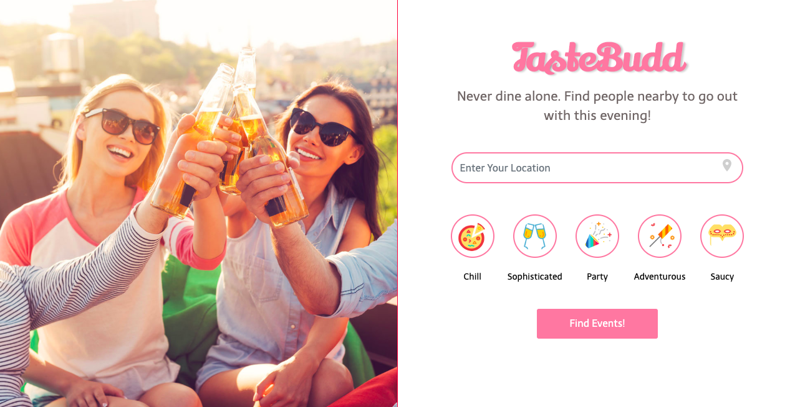
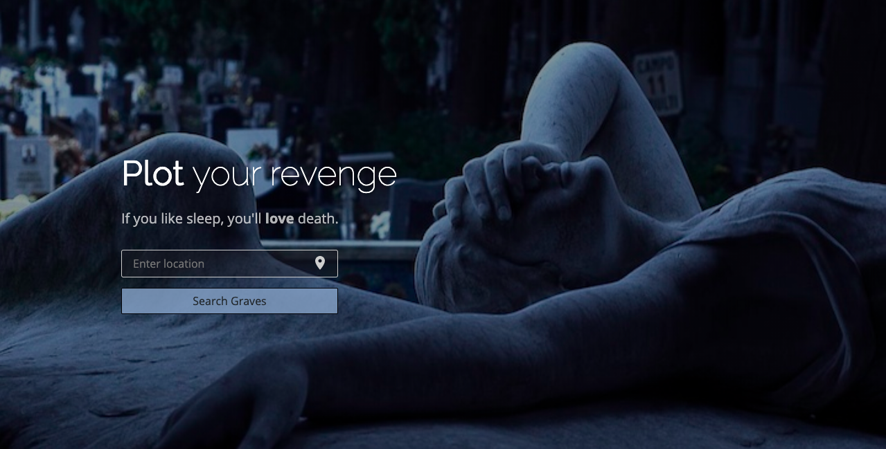

FullStack Developer
Do not try and bend the spoon.
That’s impossible. Instead… only try to realize the truth.
What truth?
There is no spoon.
There is no spoon?
Then you’ll see, that it is not the spoon that bends, it is only yourself.
About Me
I am a Fullstack Ruby on Rails web developer with a background in linguistics and writing. Coding engages my practical love of languages and logic with the incredible potency of computational rendering. When I began coding it was as though the veil had been lifted from the mysteriously powerful object that digitization is, and I came to see that all modern technology is compiled of beautifully, masterfully, creatively braided strands of logic, engineered by human genius. Realizing this, I became obsessed with the infinite potential of coding. Coding is human magic.
Cirriculum Vitae
Projects

Solo Travelers, welcome to TasteBudd! Here you can find the spontaneous buddies of your dreams to hang out and taste a new culture with.

DeathBed is a dark comical satire on AirBnB, allowing hosts to lease and guests to rent a grave in Germany for as long as they need.
Hosts can rent anything from a formal plot in a cemetary, to a hole in their backyard and guests can leave reviews from the Great Beyond and renew their booking at any time.

Inspired by Dr. Seuss's Fox in Socks, Socktails Cocktails is a webpage hebstage where you can find, add, create or incubate the recipes of your favorite cocktails and socktails

Spook yourself with eerie sounds from the Haunted Keyboard